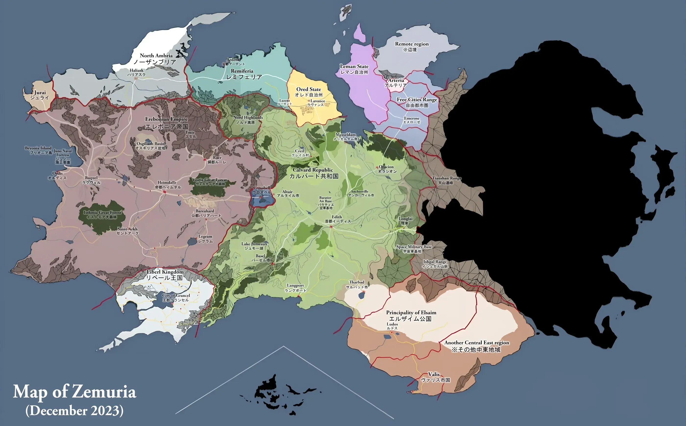

Interactive Map
Map image sourced from the Falcom Wiki.
Hover over a region to highlight it, and click to see information about that region.

Map image sourced from the Falcom Wiki.
Hover over a region to highlight it, and click to see information about that region.